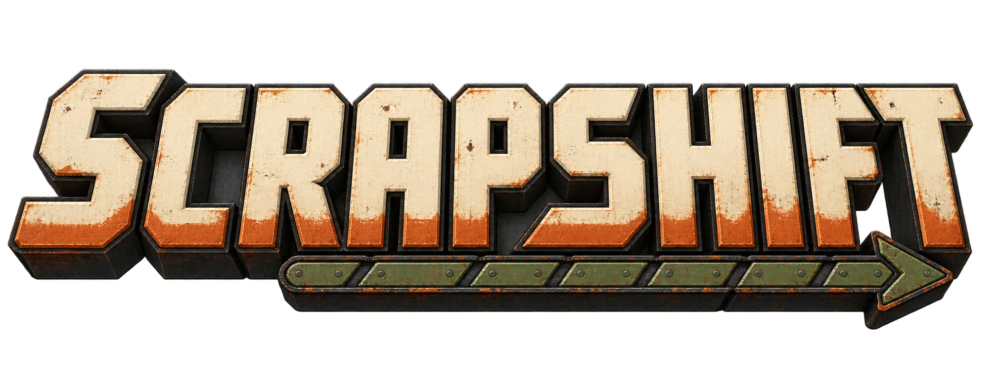
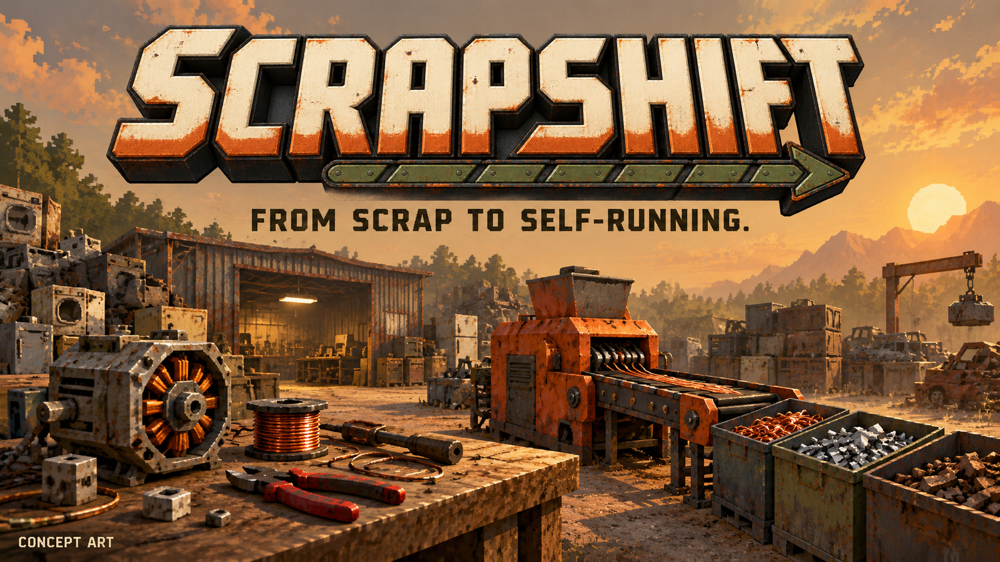
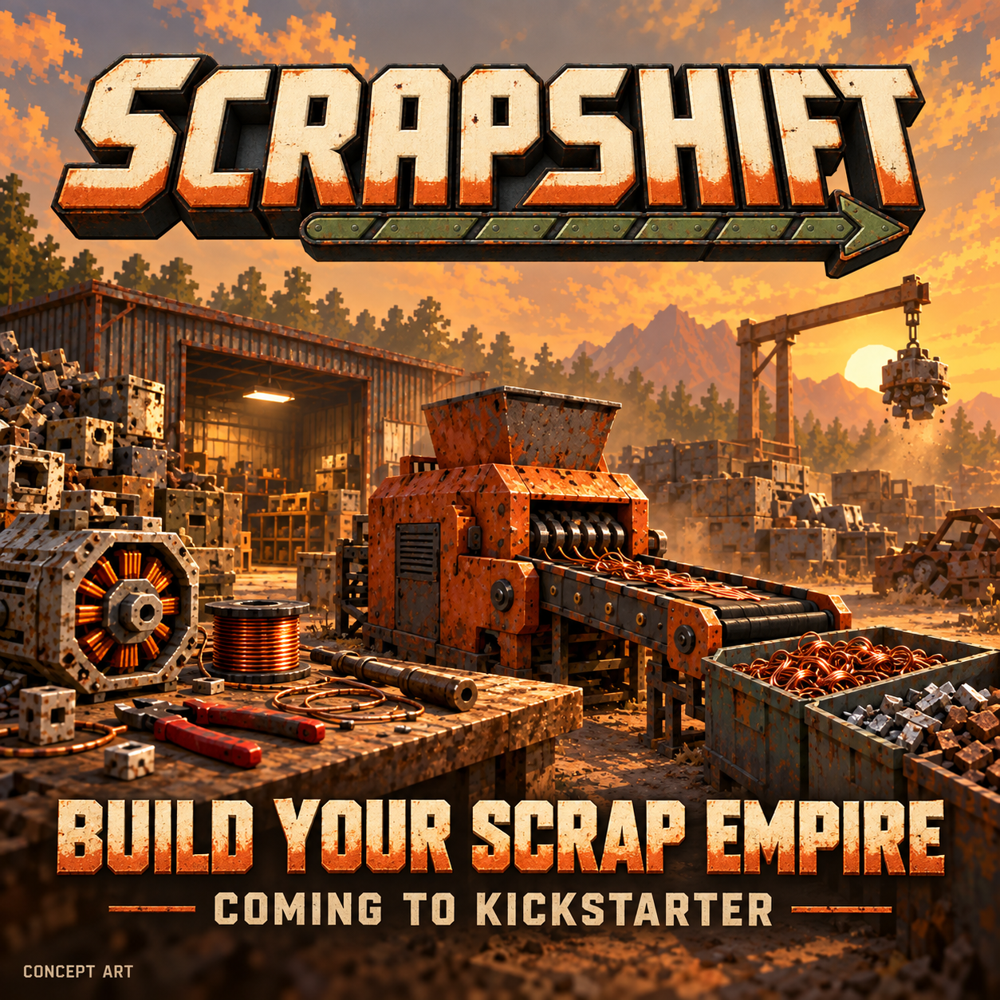
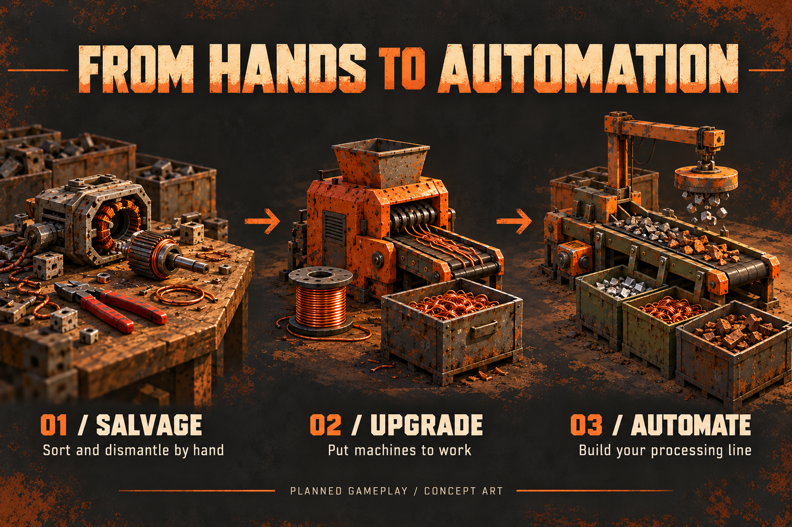

SCRAPSHIFT
Kickstarter visual kit · Concept artwork
Start with your bare hands. Build a scrapyard that works for you.




Artwork is illustrative, not captured gameplay. Reward details, budget, dates and gameplay media remain to be developed.